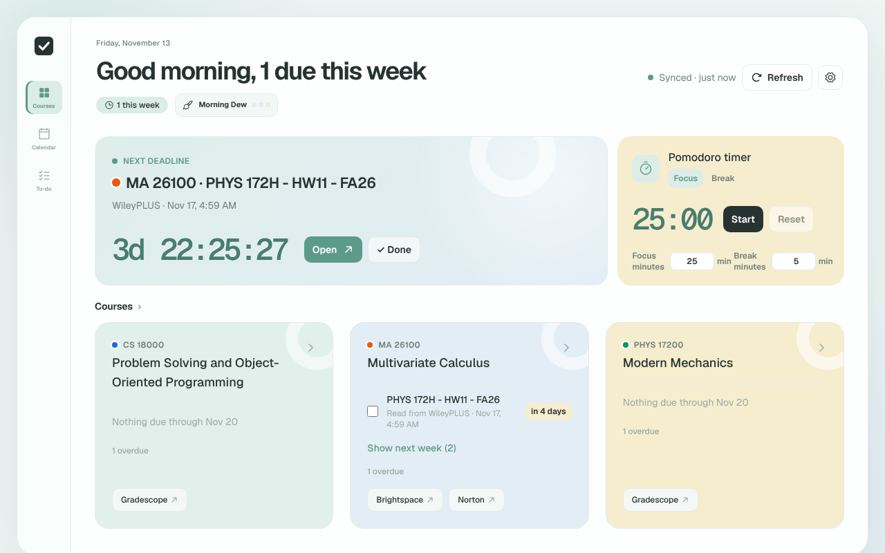
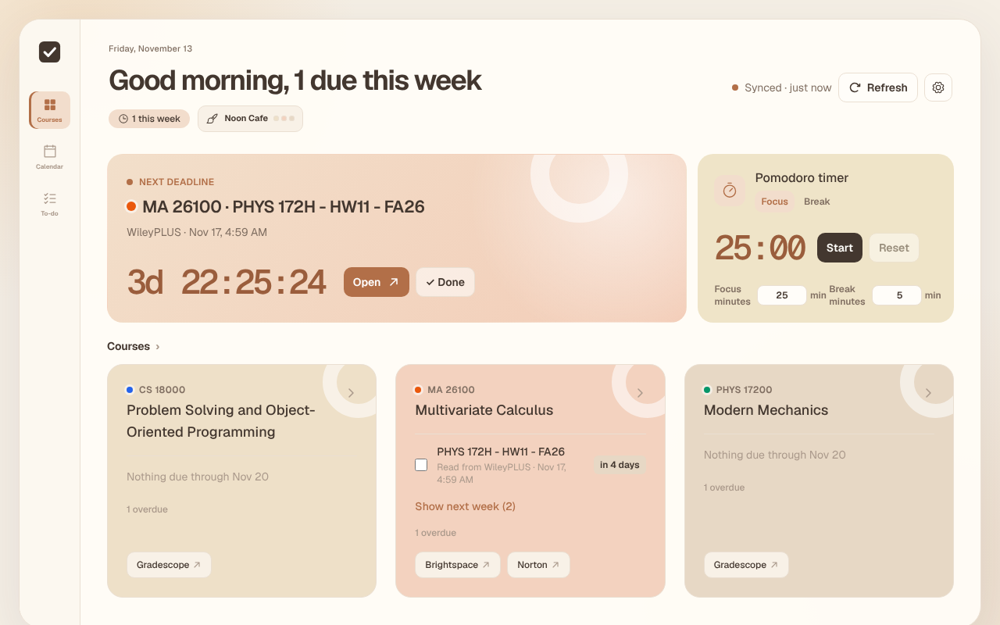
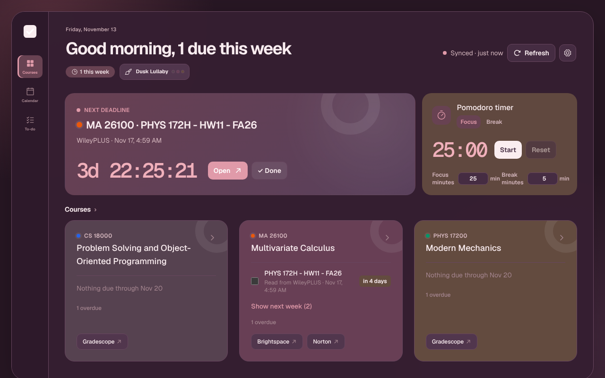
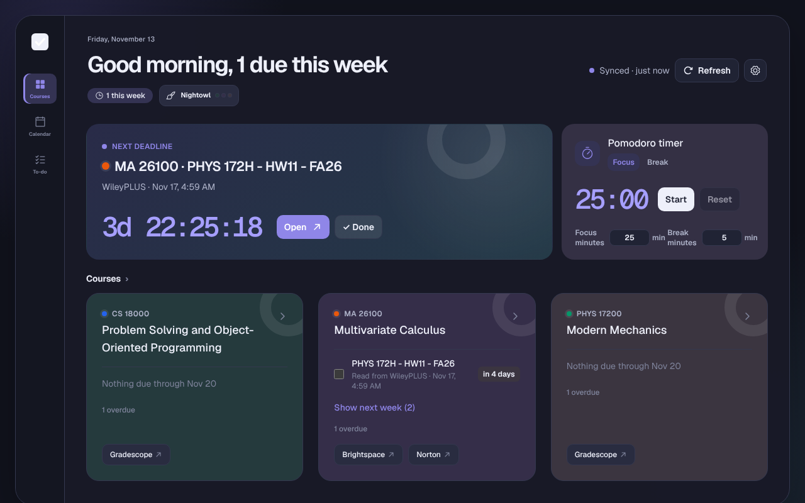

New: study themes and a focus timer
Every deadline,
one page.
Stop clicking through every course in Brightspace and opening Gradescope, Pearson, WileyPLUS, ALEKS and the rest one by one. Sign in to Brightspace once — DueBoard finds the rest and puts every due date in one place.
Free · Open source · Chrome, Edge and Firefox · Currently for Purdue's Brightspace




What it does
One page for every course, built to keep you calm about what's next.
One sign-in
Brightspace is the only account you connect. DueBoard reads your courses and discovers which homework platforms they use.
Any homework platform
WileyPLUS, ALEKS, InQuizitive, WebAssign and others: DueBoard opens your Brightspace homework link in a hidden frame in the background, reads the due date and closes it. You allow a new platform once.
Syllabus dates
Exams and due dates written in your syllabus show up as suggestions. Add the real deadlines with one click.
Next deadline
The nearest deadline is always on top with a live countdown. Open it in one click, or mark it done and see what's next.
Focus timer New
A Pomodoro timer for 25-minute focus sessions and 5-minute breaks, on the dashboard and in the toolbar popup. It keeps running while you work.
Calendar and to-do
Week and month views show which days pile up. Tick work off in the to-do list; work you handed in is ticked for you.
Course cards
Each course shows what's due next and shortcuts to Gradescope, Pearson, WileyPLUS, Achieve, Piazza, Ed and more.
Study themes New
Four palettes for the time of day, chosen for you automatically and fading smoothly from one to the next.
A theme for every hour
The same themes as the dashboard. Click one to try it on this page.
Automatic follows the clock and is the default. .
Your data stays on your computer
DueBoard uploads, collects and analyzes nothing, and never sees your password. Uninstall it and the data is gone.